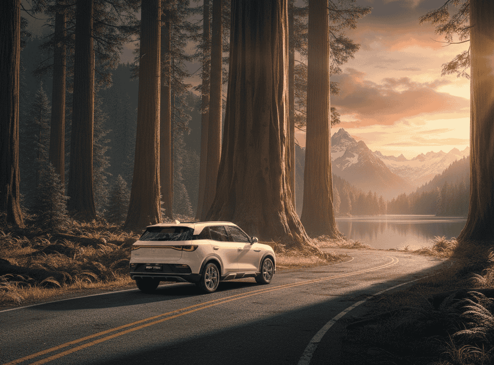
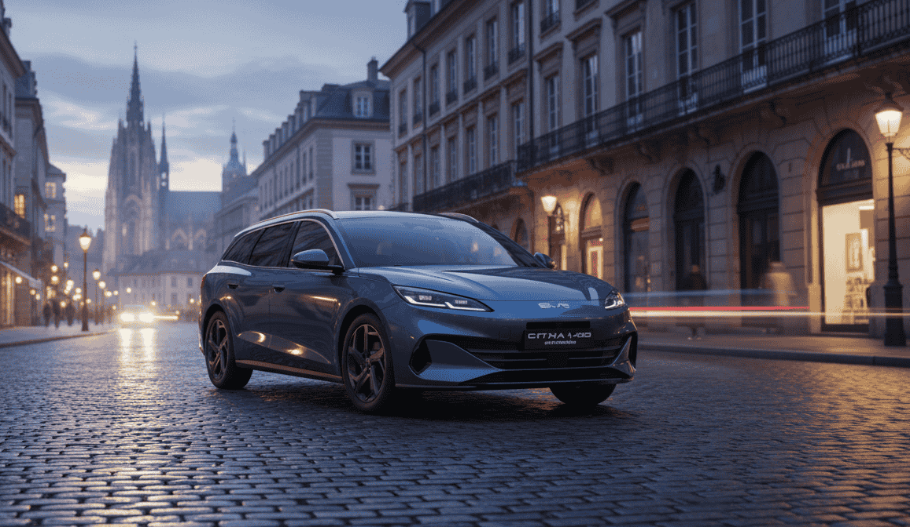

Llevo meses siguiendo muy de cerca los movimientos de BYD y, francamente, cada vez me cuesta más encontrar adjetivos que no se me queden cortos. Lo que esta empresa está haciendo a nivel global no tiene precedentes en la historia reciente del automóvil. En menos de una década ha pasado de ser un fabricante de baterías que hacía coches a convertirse en el mayor fabricante de coches eléctricos del mundo, con presencia en 110 países y un ritmo de expansión que deja sin aliento.
Esta semana, las noticias llegan por partida doble. En el Bangkok Motor Show 2026, BYD ha presentado tres modelos nuevos que cubren desde el utilitario urbano más barato del mercado hasta un sedán de tamaño medio con prestaciones sorprendentes. Y al mismo tiempo, en Norteamérica, la marca está dando pasos concretos para entrar en Canadá con una red propia de concesionarios. Vamos a analizar las dos partes de esta historia.
Parte 1: BYD arrasa en Bangkok con tres nuevos modelos
BYD ATTO 1 (Seagull): el eléctrico de 10.800€ que cambia las reglas
El BYD ATTO 1, conocido en China como Seagull, es la estrella indiscutible no solo del stand de BYD, sino probablemente de todo el salón. Es la gran apuesta de la marca para democratizar la movilidad eléctrica: un hatchback de 5 puertas diseñado para quienes buscan un vehículo urbano económico pero bien equipado, con un precio de lanzamiento desde 399.900 baht (≈10.800 euros) (fuente: Bangkokbiznews).
Cuando vi esa cifra por primera vez, tuve que leerla dos veces. 10.800 euros por un coche eléctrico nuevo, con 6 airbags, pantalla multimedia, sistemas de asistencia a la conducción y hasta carga inalámbrica para el móvil. Hace cinco años eso habría sonado a ciencia ficción.
📋 Ficha técnica del BYD ATTO 1 (Seagull):
- Dimensiones: 3.780 × 1.715 × 1.540 mm · Batalla: 2.500 mm
- Motor: 55 kW (75 CV) / 135 Nm
- 0-100 km/h: 11,1 – 13,1 s (según versión)
- Velocidad máxima: 150 km/h
🔋 Versiones de batería y autonomía:
| Versión | Batería | Autonomía (NEDC) | Carga DC |
|---|---|---|---|
| DYNAMIC | 30,0 kWh | 300 km | 30 kW (30-80% en 25 min) |
| PREMIUM | 38,8 kWh | 380 km | 40 kW |
| Long Range | 43,2 kWh | 410 km | 85 kW |
Fuente: Autolife Thailand
Equipamiento que sorprende para el precio:
- Pantalla giratoria de 10,1 pulgadas con Apple CarPlay y Android Auto inalámbricos
- Instrumentación digital de 7 pulgadas
- Carga inalámbrica para smartphone
- 6 airbags de serie
- Sistemas ADAS completos: ACC, AEB, LDW, LDP, cámara trasera
- Llave digital BYD Digital Key
- Colores: Pop Green, Shell White, Quantum Black y Velocity Blue
Lo que hace especial al ATTO 1 no es que sea el coche eléctrico más barato del mundo —que lo es—, sino que a ese precio ofrece un nivel de equipamiento y seguridad que muchos coches de combustión no incluyen ni pagando el doble. Seis airbags, frenada de emergencia autónoma y control de crucero adaptativo de serie por 10.800 euros. Que cada uno saque sus propias conclusiones.
BYD ATTO 2: el B-SUV que llena el hueco

El BYD ATTO 2 se posiciona entre el Dolphin y el ATTO 3, cubriendo un segmento clave del mercado
El BYD ATTO 2 (Yuan Up en China) es un SUV compacto del segmento B que cubre el hueco entre el hatchback Dolphin y el SUV ATTO 3. Es el tipo de coche que mucha gente busca: tamaño manejable para ciudad, pero con la altura y versatilidad de un SUV y espacio suficiente para una familia (fuente: Autolife Thailand).
📋 Ficha técnica del BYD ATTO 2:
- Dimensiones: 4.310 × 1.830 × 1.675 mm · Batalla: 2.620 mm
- Maletero: 380 – 1.320 litros
- 0-100 km/h: 7,9 segundos (ambas versiones)
🔋 Versiones de batería y autonomía:
| Versión | Batería | Potencia | Autonomía (NEDC) | Carga DC |
|---|---|---|---|---|
| Standard | 51,1 kWh | 177 CV (130 kW) | 410 km | 82 kW (30-80% en 29 min) |
| Long Range | 64,8 kWh | 204 CV (150 kW) | 495 km | 155 kW (30-80% en 19 min) |
Fuente: Superbike Magazine
Equipamiento destacado:
- Pantalla giratoria de 12,8 pulgadas y cuadro digital de 8,8 pulgadas
- Asientos delanteros con ventilación
- Techo panorámico (en versiones superiores)
- Carga inalámbrica de 50W
- Sistema de sonido con 8 altavoces
- Cámara 360° y asistente de aparcamiento
- Tecnología Cell-to-Body (CTB): la batería se integra en la estructura del chasis para mayor rigidez y seguridad
- Colores: Ski White, Relaxed Green, Cool Grey y Cosmos Black
Lo que me llama la atención del ATTO 2 es la tecnología Cell-to-Body. No es un detalle menor: al integrar la batería como parte estructural del chasis, BYD consigue un coche más rígido (mejor seguridad en impacto), más bajo de centro de gravedad (mejor comportamiento en curva) y más eficiente en el uso del espacio interior. Es el tipo de innovación que hasta hace poco solo se veía en coches de gama muy alta.
BYD Seal 6: el sedán accesible que compite con los grandes

El BYD Seal 6 se posiciona como un sedán de tamaño medio con prestaciones y precio muy competitivos
El BYD Seal 6 completa la ofensiva tailandesa de BYD con un sedán del segmento C/D que se posiciona por debajo del Seal original. Con unas dimensiones generosas (4.720 mm de largo y 2.820 mm de batalla), ofrece espacio de berlina grande a precio de compacto (fuente: Vietnam.vn).
💰 Precios del BYD Seal 6 en Tailandia:
- Dynamic: 899.900 baht (≈24.300 €) · 129 CV · 220 Nm · 160 km/h
- Premium: 949.900 baht (≈25.600 €) · 218 CV · 330 Nm · 180 km/h
Batería: 56,64 kWh (LFP Blade Battery) · 485 km NEDC
Carga: DC hasta 100 kW (30-80% en ~30 min) · AC 7 kW
Equipamiento destacado:
- Pantalla giratoria de 12,8 pulgadas y cuadro digital de 8,8 pulgadas
- Techo panorámico y asientos ventilados (versión Premium)
- Carga inalámbrica de 50W
- Sistema de sonido con 8 altavoces (Premium)
- Cámara 360° y sensores de aparcamiento delanteros y traseros
- 6 airbags y paquete completo ADAS
- Maletero de 460 litros + frunk (maletero delantero)
Un sedán de 4,72 metros con 485 km de autonomía, pantalla de 12,8 pulgadas, techo panorámico y 218 CV por 25.600 euros. Esas son las cifras del BYD Seal 6 en su versión Premium. Compararlas con lo que se ofrece en Europa al mismo precio resulta, cuanto menos, incómodo para los fabricantes europeos.
Parte 2: BYD desembarca en Canadá
BYD desembarca en Canadá con fuerza
Mientras BYD consolida su posición en el Sudeste Asiático, la otra gran noticia de la semana llega desde Norteamérica. La marca ha anunciado planes para abrir hasta 20 concesionarios en Canadá durante su primer año de operación, un movimiento que supone su primera entrada real en un mercado norteamericano (fuente: Automotive World).
BYD ha contratado a Dealer Solutions Mergers & Acquisitions, una consultora especializada con sede en Ontario, para identificar las ubicaciones. Según declaró Farid Ahmad, CEO de la consultora, a The Globe and Mail: "BYD planea establecer 20 concesionarios en un año, comenzando por el área de Toronto para luego expandirse a Vancouver, Montreal y Calgary".
📍 Ubicaciones previstas para los concesionarios BYD en Canadá:
- Greater Toronto Area (GTA): Tres ubicaciones ya en discusión, por ser el mayor mercado automovilístico del país
- Vancouver: Mercado con alta adopción de vehículos eléctricos y conciencia medioambiental
- Montreal: Quebec ofrece incentivos provinciales adicionales para la compra de eléctricos
- Calgary: Puerta de entrada al mercado de Alberta y las Provincias de las Praderas
Aranceles, cupos y el juego geopolítico
La entrada de BYD en Canadá ha sido posible gracias a un cambio significativo en la política arancelaria del país. En enero de 2026, el gobierno canadiense redujo los aranceles a los vehículos eléctricos chinos del 100% al 6,1%, pero estableció un mecanismo de control: un cupo anual de 49.000 unidades para todos los fabricantes chinos en conjunto (fuente: Dongchedi).
📊 Distribución del cupo arancelario:
- Fase 1 (marzo-agosto 2026): 24.500 unidades
- Fase 2 (sept. 2026-febrero 2027): 24.500 unidades adicionales
- Progresión anual: El cupo aumentará hasta alcanzar 70.000 unidades en 2030
- Condición: Más de la mitad de los vehículos importados deben tener un precio inferior a 35.000 CAD (≈25.400 USD)
Es un movimiento calculado por parte de Canadá: abre la puerta a los eléctricos chinos para que los consumidores tengan acceso a modelos asequibles, pero lo hace de forma gradual para proteger a la industria local y medir el impacto. Para BYD, es una oportunidad de oro. Para el mercado canadiense, una inyección de competencia que debería presionar los precios a la baja.
⚠️ Un dato importante: sin subsidios federales
Los vehículos eléctricos chinos no serán elegibles para los subsidios federales canadienses, ya que estos solo se aplican a vehículos fabricados en Canadá o en países con acuerdos de libre comercio. BYD confía en que su ventaja en costes y escala le permitirá competir incluso sin estas ayudas.
¿Fábrica propia en Canadá?
Pero BYD no se conforma con importar. La vicepresidenta ejecutiva de la compañía, Stella Li, ha confirmado en una entrevista con Bloomberg que BYD está evaluando activamente la construcción de una planta de fabricación en Canadá (fuente: CNBC TV18).
Las declaraciones de Li son reveladoras por varios motivos:
- "Estamos estudiando el mercado canadiense para una posible instalación de fabricación"
- BYD preferiría operar la fábrica en solitario en lugar de formar una joint venture, lo que podría generar fricciones con el gobierno canadiense (que ha mostrado preferencia por acuerdos de colaboración)
- Además, Li señaló que BYD está abierta a adquirir un fabricante de automóviles tradicional occidental en dificultades: "Estamos abiertos a todas las oportunidades. Veremos qué nos beneficia"
Esa última declaración me parece especialmente significativa. BYD no solo quiere vender coches: quiere comprar fábricas, adquirir know-how, hacerse con redes de distribución existentes. Es una estrategia de expansión industrial a gran escala que va mucho más allá de la simple exportación.
De hecho, la compañía ya está explorando otras opciones en la región: compite por adquirir una planta de Nissan-Mercedes-Benz en México y recientemente inició la producción en su fábrica de Bahía (Brasil).
¿Y Estados Unidos?
Mientras Canadá abre sus puertas, Estados Unidos sigue siendo un mercado cerrado para los fabricantes chinos. Los aranceles del 100% y las restricciones a la tecnología conectada china hacen inviable la entrada directa. Stella Li calificó el mercado estadounidense como un "entorno complicado" y confirmó que BYD ha aparcado, por ahora, sus ambiciones de entrar en EE.UU.
Los números de una máquina imparable
Para dimensionar la escala de lo que estamos hablando, merece la pena repasar los números globales de BYD:
📊 BYD en cifras – 2025/2026:
| Ventas globales 2025 | ~4,6 millones de vehículos (4,55 M turismos) |
| Eléctricos puros (BEV) | 2,26 millones |
| Híbridos enchufables (PHEV) | 2,29 millones |
| Exportaciones 2025 | 1,04 millones (22,9% del total) |
| Objetivo exportaciones 2026 | 1,3 millones |
| Países con presencia | 110 |
| Fábricas fuera de China | Tailandia, Uzbekistán, Brasil, Hungría (en construcción) |
Fuente: Motor1
4,6 millones de vehículos vendidos en un solo año. Para ponerlo en contexto: eso supera las ventas anuales de BMW, Mercedes-Benz y Audi combinadas. Y BYD sigue creciendo a un ritmo que los analistas califican de "sin precedentes en la industria automotriz moderna".
¿Qué significa todo esto para Europa y España?
Sé que muchos lectores se preguntan: "Todo esto está muy bien, pero ¿cuándo llegará a mi mercado?". Es una pregunta legítima, y creo que la respuesta es más cercana de lo que parece.
🌍 Tres implicaciones concretas para España y Europa:
- 1. Los precios asiáticos anticipan los europeos:
El ATTO 1 a 10.800€ en Tailandia no llegará mañana a ese precio a Europa (los aranceles del 38% de la UE lo impedirían). Pero si BYD consolida su fábrica en Hungría y produce localmente, podría ofrecer el Seagull en Europa por debajo de los 20.000€. Combinado con las ayudas del Plan MOVES y la deducción del 15% en IRPF, un eléctrico urbano podría situarse por debajo de los 15.000€ netos. - 2. Canadá es el laboratorio:
La entrada de BYD en Canadá —un mercado desarrollado, con estándares occidentales y sin subsidios para marcas chinas— será el test definitivo. Si BYD demuestra que puede competir y ganar cuota en esas condiciones, la presión sobre los reguladores europeos para facilitar la entrada será enorme. - 3. La estrategia de producción local se acelera:
Lo que vemos en Tailandia (Changan en Rayong, BYD con planta en construcción) y lo que se planea en Canadá es exactamente lo que BYD hará en Europa. La fábrica de Hungría es solo el principio. Si el mercado responde, es cuestión de tiempo que aparezcan plantas adicionales en otros países de la UE, posiblemente incluyendo España.
Como analizo en nuestro artículo de opinión sobre por qué los coches chinos ya son premium, la narrativa de que "son baratos pero malos" se ha quedado obsoleta. BYD no solo fabrica coches baratos: fabrica su propia tecnología de baterías (Blade Battery), sus propios semiconductores, sus propios motores eléctricos. Es un nivel de integración vertical que ningún fabricante europeo puede igualar actualmente.
Conclusión: la bola de nieve ya rueda
Si me pidiesen que resumiese en una frase lo que BYD está haciendo, diría esto: está construyendo la Toyota del siglo XXI. Un fabricante que domina la tecnología, la escala de producción y la estrategia de expansión global con una visión a largo plazo implacable.
La ofensiva en Bangkok con modelos desde 10.800€ demuestra que BYD puede hacer coches eléctricos accesibles sin renunciar a la calidad ni al equipamiento. La expansión en Canadá demuestra que no se conforma con los mercados asiáticos: quiere estar en todas partes. Y la posibilidad de adquirir fabricantes occidentales demuestra que piensa a lo grande.
Para nosotros, como consumidores, todo esto es una buena noticia. Más competencia significa mejores productos, más opciones y, sobre todo, precios más bajos. La transición eléctrica no solo es inevitable: es cada vez más asequible. Y BYD está siendo uno de sus principales motores.
Preguntas frecuentes
FAQ – Ofensiva global de BYD
🔹 ¿Cuánto cuesta el BYD ATTO 1 (Seagull)?
El BYD ATTO 1 (conocido como Seagull en China) tiene un precio de lanzamiento en Tailandia desde 399.900 baht, equivalente a unos 10.800 euros. Es el coche eléctrico más barato presentado en el Bangkok Motor Show 2026. La versión de acceso DYNAMIC cuenta con batería de 30 kWh y 300 km de autonomía NEDC. La versión PREMIUM, con batería de 38,8 kWh y 380 km de autonomía, ronda los 500.000 baht (unos 13.500 euros). Existe también una versión Long Range con 43,2 kWh y 410 km de autonomía. Todas las versiones incluyen 6 airbags, pantalla giratoria de 10,1 pulgadas, sistemas ADAS completos y carga inalámbrica de serie.
🔹 ¿BYD va a vender coches en Canadá?
Sí. BYD ha anunciado planes para abrir hasta 20 concesionarios en Canadá durante su primer año de operación, comenzando por el Greater Toronto Area (con tres ubicaciones ya en discusión) y expandiéndose a Vancouver, Montreal y Calgary. La entrada se ha hecho posible tras la reducción de aranceles canadienses a los vehículos eléctricos chinos del 100% al 6,1% en enero de 2026, aunque con un cupo anual de 49.000 unidades para todos los fabricantes chinos en conjunto. Los vehículos chinos no serán elegibles para subsidios federales canadienses, pero BYD confía en su ventaja en costes. Además, la vicepresidenta ejecutiva Stella Li ha confirmado que la compañía evalúa activamente la construcción de una fábrica propia en Canadá.
🔹 ¿Qué características tiene el BYD ATTO 2?
El BYD ATTO 2 (Yuan Up en China) es un SUV compacto del segmento B con dimensiones de 4.310 mm de largo, 1.830 mm de ancho y 2.620 mm de batalla. Ofrece un maletero de 380 a 1.320 litros y dos versiones: Standard (51,1 kWh, 177 CV, 410 km NEDC, carga rápida DC a 82 kW con 30-80% en 29 minutos) y Long Range (64,8 kWh, 204 CV, 495 km NEDC, carga rápida DC a 155 kW con 30-80% en 19 minutos). Ambas versiones aceleran de 0-100 km/h en 7,9 segundos. Destaca por su pantalla giratoria de 12,8 pulgadas, techo panorámico, asientos ventilados, cámara 360°, carga inalámbrica de 50W y la innovadora tecnología Cell-to-Body (CTB) que integra la batería en la estructura del chasis.
🔹 ¿Cuántos coches vendió BYD en 2025?
BYD vendió aproximadamente 4,6 millones de vehículos en 2025, de los cuales 4,55 millones fueron turismos. De ese total, 2,26 millones fueron eléctricos puros (BEV) y 2,29 millones híbridos enchufables (PHEV). Las exportaciones alcanzaron 1,04 millones de vehículos, representando el 22,9% de las ventas totales. Para 2026, BYD se ha marcado un objetivo de exportar 1,3 millones de unidades. La compañía tiene presencia comercial en 110 países y cuenta con fábricas fuera de China en Tailandia, Uzbekistán, Brasil y Hungría (en construcción). Estos números convierten a BYD en el mayor fabricante de coches eléctricos del mundo por volumen de ventas.